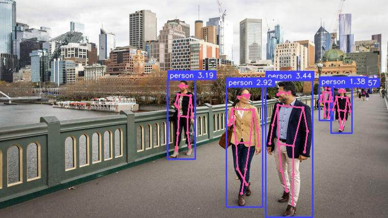
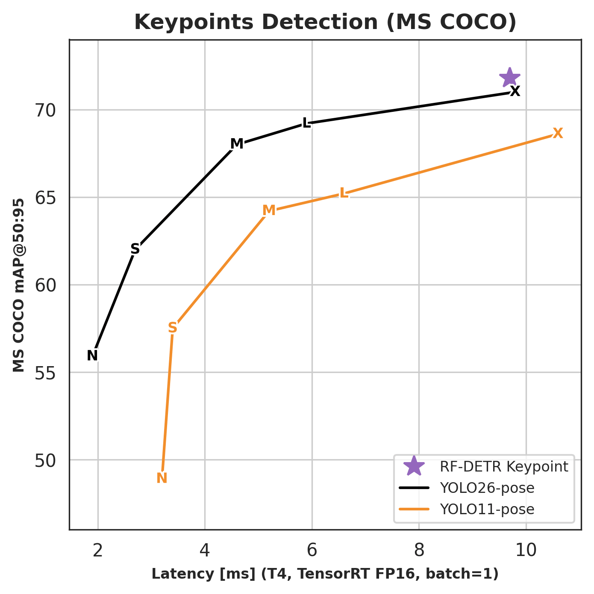
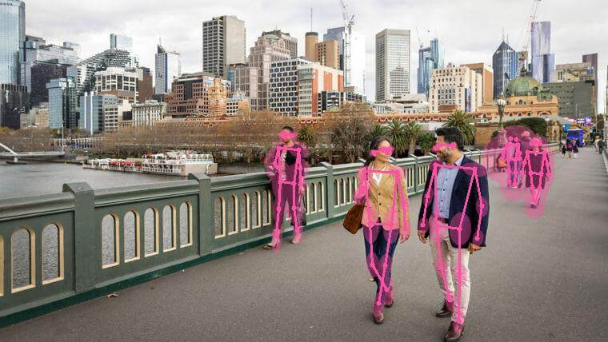

Run an RF-DETR Keypoint Model¶
RF-DETR Keypoint is a real-time transformer architecture for keypoint detection, built on a DINOv2 vision transformer backbone. The preview model is pretrained on the Microsoft COCO dataset and predicts 17 body keypoints per detected person.

Preview model
RFDETRKeypointPreview is an early-access release. Fine-tuning on custom keypoint datasets is the primary intended use case. See Keypoint Preview Parameters for training configuration. API surface and checkpoint weights may change before the stable release.
Pre-trained Checkpoints¶
RF-DETR Keypoint outperforms YOLO26-pose X and YOLO11-pose X at comparable latency on MS COCO. Latency measured on NVIDIA T4, TensorRT FP16, batch size 1.

| Model | RF-DETR package class | COCO AP50:95 | Latency (ms) | Params (M) | Resolution | License |
|---|---|---|---|---|---|---|
| Keypoint (Preview) | RFDETRKeypointPreview |
71.8 | 9.7 | 126.4 | 576x576 | Apache 2.0 |
The keypoint model is available in the
rfdetrpackage only. It is not yet available via theinferencepackage.Benchmark evaluated on COCO val2017 person keypoints (AP50:95) with the standard COCO 17-keypoint OKS sigmas; latency on NVIDIA T4, TensorRT FP16, batch size 1.
Run on an Image¶
Perform inference on an image using the rfdetr package. model.predict() returns an sv.KeyPoints object containing skeleton coordinates and per-keypoint confidence scores for each detected person.
import cv2
import supervision as sv
from rfdetr import RFDETRKeypointPreview
model = RFDETRKeypointPreview()
image_bgr = cv2.imread("/path/to/image.jpg")
image_rgb = cv2.cvtColor(image_bgr, cv2.COLOR_BGR2RGB)
key_points = model.predict(image_rgb, threshold=0.5)
annotated_image = sv.VertexAnnotator().annotate(image_rgb, key_points)

Understanding the Output¶
model.predict() returns an sv.KeyPoints object. The fields most commonly used downstream:
| Field | Shape | Description |
|---|---|---|
key_points.xy |
(N, K, 2) |
Pixel coordinates of each keypoint per detected instance |
key_points.keypoint_confidence |
(N, K) |
Per-keypoint findability score; use to filter low-confidence points |
key_points.detection_confidence |
(N,) |
Per-instance detection score; this is what threshold filters on. For keypoint models it includes the default uncertainty fusion term normalized to [0, 1). |
key_points.class_id |
(N,) |
Model label ID for each detection. COCO-pretrained checkpoints use sparse COCO category IDs (1–90). Fine-tuned active-first keypoint checkpoints use normal 0-based class IDs; in the one-class preview setup, class_id=0 is the foreground class and class_id=1 is "__background__". Legacy background-first keypoint checkpoints use slot 0 as "__background__" and start foreground classes at slot 1. Use key_points.data["class_name"] for name resolution rather than indexing your class list by class_id. |
key_points.data["class_name"] |
(N,) |
Class names resolved from class_id; prefer this over indexing a class-name list directly. |
key_points.data["xyxy"] |
(N, 4) |
Bounding box for each detected instance in [x1, y1, x2, y2] format |
key_points.data["source_image"] |
list of arrays | Source frame stored once per detection; all N entries are the same array — use [0] to access it |
K=17 for the pretrained COCO person-keypoint preview checkpoint. Fine-tuned checkpoints use the keypoint count from their dataset schema, so custom keypoint datasets can return any K supported by their COCO keypoint annotations.
Keypoints with visible=False are skipped by supervision annotators. To hide low-confidence joints manually, threshold key_points.keypoint_confidence and set matching entries to False in key_points.visible.
For fine-tuning on a custom keypoint dataset, see Keypoint preview custom datasets.
Run on video, webcam, or RTSP stream¶
These examples use OpenCV for decoding and display. Replace <SOURCE_VIDEO_PATH>, <WEBCAM_INDEX>, and <RTSP_STREAM_URL> with your inputs. <WEBCAM_INDEX> is usually 0 for the default camera.
import cv2
import supervision as sv
from rfdetr import RFDETRKeypointPreview
model = RFDETRKeypointPreview()
video_capture = cv2.VideoCapture("<SOURCE_VIDEO_PATH>")
if not video_capture.isOpened():
raise RuntimeError("Failed to open video source: <SOURCE_VIDEO_PATH>")
while True:
success, frame_bgr = video_capture.read()
if not success:
break
frame_rgb = cv2.cvtColor(frame_bgr, cv2.COLOR_BGR2RGB)
key_points = model.predict(frame_rgb, threshold=0.5)
annotated_frame = sv.VertexAnnotator().annotate(frame_bgr, key_points)
cv2.imshow("RF-DETR Keypoint Video", annotated_frame)
if cv2.waitKey(1) & 0xFF == ord("q"):
break
video_capture.release()
cv2.destroyAllWindows()
import cv2
import supervision as sv
from rfdetr import RFDETRKeypointPreview
model = RFDETRKeypointPreview()
WEBCAM_INDEX = 0 # Change this to the desired webcam index (e.g., 1, 2, ...)
video_capture = cv2.VideoCapture(WEBCAM_INDEX)
if not video_capture.isOpened():
raise RuntimeError(f"Failed to open webcam: {WEBCAM_INDEX}")
while True:
success, frame_bgr = video_capture.read()
if not success:
break
frame_rgb = cv2.cvtColor(frame_bgr, cv2.COLOR_BGR2RGB)
key_points = model.predict(frame_rgb, threshold=0.5)
annotated_frame = sv.VertexAnnotator().annotate(frame_bgr, key_points)
cv2.imshow("RF-DETR Keypoint Webcam", annotated_frame)
if cv2.waitKey(1) & 0xFF == ord("q"):
break
video_capture.release()
cv2.destroyAllWindows()
import cv2
import supervision as sv
from rfdetr import RFDETRKeypointPreview
model = RFDETRKeypointPreview()
video_capture = cv2.VideoCapture("<RTSP_STREAM_URL>")
if not video_capture.isOpened():
raise RuntimeError("Failed to open RTSP stream: <RTSP_STREAM_URL>")
while True:
success, frame_bgr = video_capture.read()
if not success:
break
frame_rgb = cv2.cvtColor(frame_bgr, cv2.COLOR_BGR2RGB)
key_points = model.predict(frame_rgb, threshold=0.5)
annotated_frame = sv.VertexAnnotator().annotate(frame_bgr, key_points)
cv2.imshow("RF-DETR Keypoint RTSP", annotated_frame)
if cv2.waitKey(1) & 0xFF == ord("q"):
break
video_capture.release()
cv2.destroyAllWindows()
Visualization¶
supervision provides several keypoint annotators. Choose based on what you want to draw.
Draws skeleton edges (lines between connected joints). Edges where either endpoint has visible=False are skipped automatically.
Draws a dot at each keypoint. Keypoints with visible=False are skipped automatically.
Draws covariance ellipses from key_points.data["covariance"], giving a visual footprint of per-keypoint uncertainty.